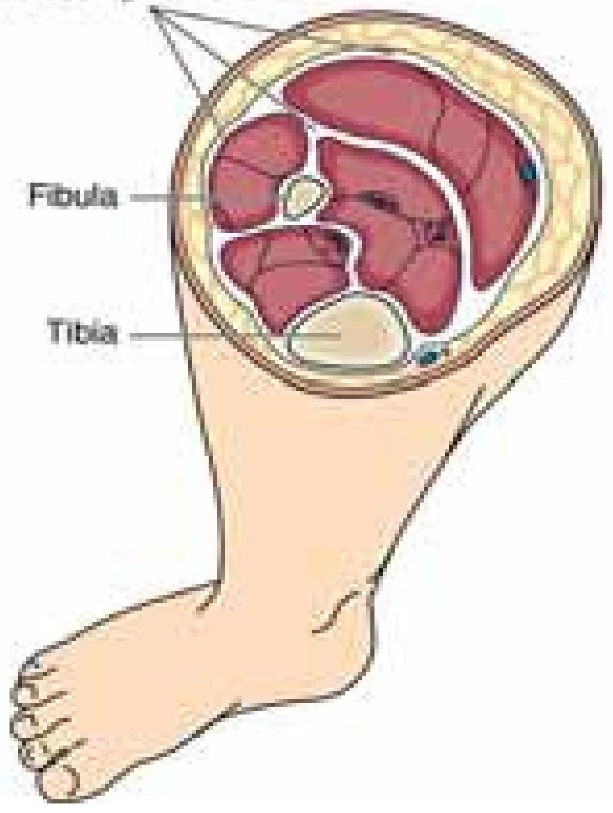
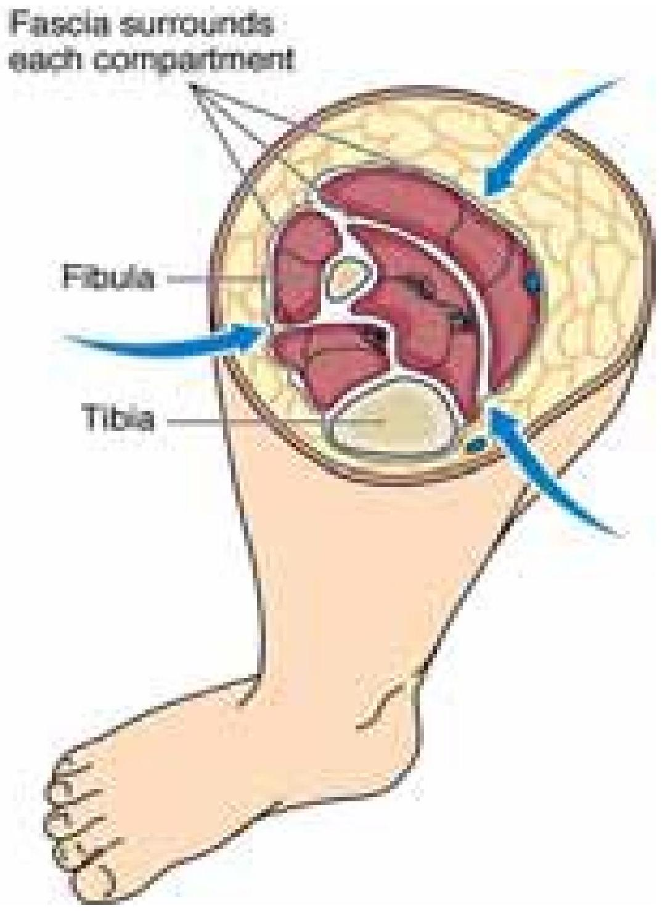
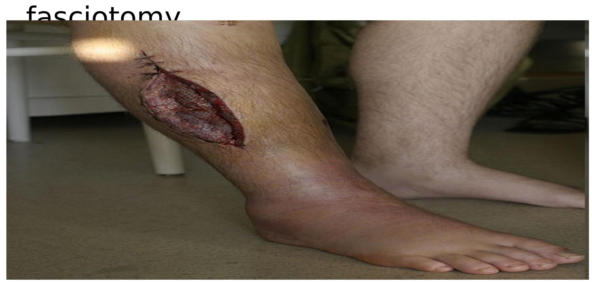
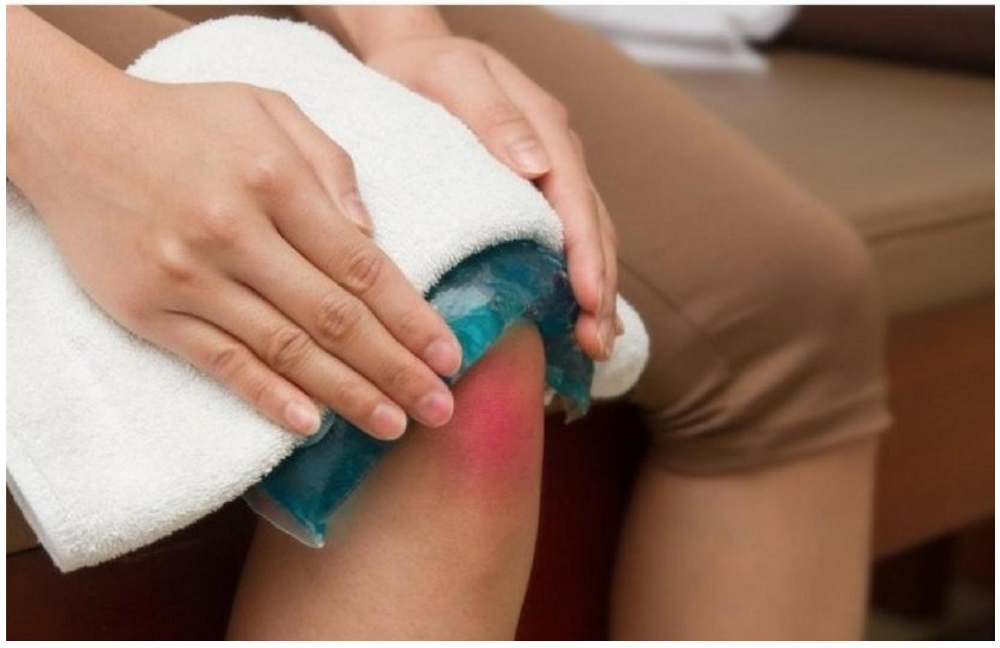

TRAUMA AND INJURIES
Multiple (Polytrauma)
- polytrauma(Multiple trauma) is caused by a single catastrophic event that causes life-threatening injuries to at least two distinct organs or organ systems.
- Patients with single-system trauma still receive full assessment, because even single-system injuries can be life-threatening or more severe than they initially appear.
- Mortality in patients with multiple trauma is related to the severity of the injuries and the number of systems and organs involved.
- Immediately after injury, the body is hypermetabolic, hypercoagulable, and severely stressed.
- Care of the patient with multiple injuries requires a team approach, with one person responsible for coordinating the treatment.
- The nursing staff assumes responsibility of:
- assessing and monitoring the patient, ensuring airway and IV access,
- administering prescribed medications,
- collecting laboratory specimens, and
- documenting activities and the patient's subsequent responses.
Assessment and Diagnostic Findings
- Evidence of trauma may be sparse or absent.
- Patients with multiple trauma should be assumed to have a spinal cord injury until it is proven otherwise.
- The injury regarded as the least significant in appearance may be the most lethal.
- For example, the pelvic fracture not identified until an x-ray is obtained may cause rapid and massive hemorrhage into the pelvic cavity, but an obvious amputation of the arm may have already stopped bleeding from the body's normal response of vasoconstriction.
The patient is observed for the following:
- Hypovolemic shock resulting from extravasation of blood and plasma into injured tissues after compression has been released
- Paralysis of a body part
- Erythema and blistering of skin
- Damaged body part (usually an extremity) appearing swollen, tense, and hard
- Renal dysfunction (prolonged hypotension causes kidney damage and acute renal insufficiency; myoglobinuria secondary to muscle damage can cause acute tubular necrosis and acute renal failure)
Management
- The goals of treatment are to determine the extent of injuries and to establish priorities of treatment.
- Any injury interfering with a vital physiologic function (e.g., ABC - Airway, Breathing, Circulation) is an immediate threat to life and has the highest priority for immediate treatment.
- Essential life-saving procedures are performed simultaneously by the emergency team.
- As soon as the patient is resuscitated, clothes are removed or cut off and a rapid physical assessment is performed.
- Transfer from field management to the ED must be orderly and controlled, with attention given to the verbal report from emergency medical services.
- Treatment in a trauma center is appropriate for patients experiencing major trauma.
In conjunction with maintaining the A, B and C, the patient is observed for:
- acute renal insufficiency - Injury to the back can cause kidney damage.
- severe muscular damage - may cause rhabdomyolysis, which signifies a release of myoglobin from ischemic skeletal muscle, resulting in acute tubular necrosis.
- major soft tissue injuries are splinted promptly to control bleeding and pain.
- Medications for pain and anxiety are then administered
- Patient is quickly transported to the operating suite for wound débridement and fracture repair.
- A hyperbaric oxygen chamber (if available) may be used to hyperoxygenate crushed tissue
- The serum lactic acid level is monitored; a decrease to less than 2.5 mmol/L is an indication of successful resuscitation
- Injured extremity is elevated to relieve swelling and pressure.
- Fasciotomy (ie, surgical incision to the level of the fascia) to restore neurovascular function done if compartment syndrome develops
NERVE INJURIES AND VASCULAR INJURIES
Introduction
- Assessment of neurovascular status is essential for the early recognition of neurovascular deterioration or compromise.
- Delays in recognising neurovascular compromise can lead to permanent deficits, loss of a limb and even death.
- Neurovascular deterioration can occur late after trauma, surgery or cast application.
causes of nerve injuries and vascular injuries
- Musculoskeletal trauma to the extremities
- Fracture
- Crush injury
- Post-operative
- Internal or external fixation or fractures
- Orthopaedic surgery
- Spinal surgery
- Plastic surgery on extremities or phalanges
- Cardiac catheterisation
- Tourniquet applied for long periods
- Application of plaster cast
- Restrictive dressing
- Application of traction (skin and skeletal)
- Burns patients
- Circumferential burns
- Signs of infection in the limb
Aim Assessment of neurovascular status
The aim of this clinical practice guideline is to outline the required neurovascular assessment to recognise early compromise and prevent permanent damage to the limb(s).
Definition of Terms
- Muscle compartment: A well-defined space in the body that consists of a group of muscles in a particular segment, the muscle compartment is bound by fascia
- Fasciotomy: Surgical incision made through the fascia and into a compartment due to increasing pressure. The aim of the procedure is to release pressure to improve peripheral neurovascular status and prevent long term complications.
- Compartment syndrome: Increase in pressure of a closed muscle compartment that causes muscle and nerve ischemia.
- Active movement: Ability to voluntarily extend and flex an extremity or digit.
- Passive movement: Assessor able to extend and flex an extremity or digit
Neurovascular assessment
A neurovascular assessment is required for each affected limb and includes assessment of
- Pain
- Sensation
- Motor function
- Perfusion (colour, temperature, capillary refill, swelling, pulses)
Management
- Ensure affected limb is elevated to minimise the risk of compartment syndrome.
- Lower extremities can be elevated with pillows or using bed mechanics;
- upper extremities can be elevated on either a pillow, sling or box sling.
Management of Neurovascular Compromise
- Elevate limb, no higher than heart level.
- Split plaster, casts or cut/remove bandage.
- Maintain limb alignment.
- Notify surgeon and treating team.
- If neurovascular status improves keep affected limb elevated and continue to monitor closely.
- If neurovascular status does not improve or continues to deteriorate, the patient may need to go to theatre for pressure monitoring and fasciotomy.
Compartment Syndrome
 Fasciotomy may be performed to relieve pressure.
Pack and dress the wound after
Frequency of observations
- 1 hourly for the first 24 hours post injury, surgery or application of cast.
- Then 4 hourly for a further 48 hours or as specified by the treating medical team.
- More frequently if any deviations from baseline observations.
Neurovascular complications
If neurovascular status is compromised, patients may report
- decreased sensation,
- loss of sensation,
- dysesthesia,
- numbness,
- tingling or pins and needles.
- Altered sensation may be a result of a nerve block
SOFT TISSUE INJURIES
Caused by the following
- Contusion - bruising Injury caused by blunt force
- Strain - Microscopic tear in the muscle caused by excessive Pull or stretching
- Sprain - Injury from excessive stretching of a ligament surrounding a joint
Contusion
- Injury caused by blunt force, such as a blow, kick, or fall.
- Many small blood vessels rupture and bleed into soft tissues (ecchymosis, or bruising). A hematoma may develop.
- Local symptoms (pain, swelling, and discoloration) are controlled with intermittent application of cold.
- Most resolve in 1 to 2 weeks.
A strain
Microscopic tear in the muscle-Pulled muscle. A "muscle pull" caused by overuse, overstretching, or excessive stress. Strains are microscopic, incomplete muscle tears with some bleeding into the tissue.
- The patient experiences soreness or sudden pain, with local tenderness on muscle use and isometric contraction.
A sprain
Ligament injury (Excessive stretching of a ligament)
- Injury to the ligaments surrounding a joint caused by: wrenching - twisting suddenly and violently or pulling
- A torn ligament loses its stabilizing ability.
- Blood vessels rupture and edema occurs; the joint is tender, and movement of the joint becomes painful.
- The degree of disability and pain increases during the first 2 to 3 hours after the injury because of the associated swelling and bleeding.
- An x-ray should be obtained to rule out bone injury.
- Avulsion fracture (in which a bone fragment is pulled away by a ligament or tendon) may be associated with a sprain.
Sprain grading
- Grade I-mild bleeding and inflammation
- Grade II-severe stretching and some tearing and inflammation and hematoma
- Grade III-complete tearing of ligament
- Grade IV-bony attachment of ligament broken away
Sprains
- Treatment of sprains:
- first-degree: rest, ice for 24 to 48 hr, compression bandage, and elevation
- second-degree: immobilization, partial weight bearing as tear heals
- third-degree and 4th degree: immobilization for 4 to 6 weeks, possible surgery
Soft Tissue Injury Step-By-Step Trauma Mngt
AIM: To decrease swelling and pain, and encourage rest
Treatment of contusions, strains, and sprains consists of the acronym RICE-Rest, Ice, Compression, Elevation)
- R = Stop the activity immediately. Splint to support extremities and limit movement
- I = Apply ice to the injured part for 10 to 15 minutes for first 48 hours. Let the area warm completely before applying ice again to prevent frost
- C = Wrap the injured part in a elastic compression bandage/Compression dressing
- E = Elevate the injured part to increase venous return and reduce swelling.
- NSAIDs
- See a physician for a proper diagnosis of any serious injury.
Management
- Rest prevents additional injury and promotes healing.
- Moist or dry cold compression applied intermittently for 20-30 minutes during the first 24 to 48 hours after injury produces vasoconstriction, which decreases bleeding, edema, and discomfort.
- Care must be taken to avoid skin and tissue damage from excessive cold.
NURSING CARE FOR SPRAINS AND STRAINS
R REST
I Ice
C Compression
E Elevation
SPORTS-RELATED INJURIES
Sport activities are very common, and, unfortunately, sports related injuries are also common consequences.
Different Types of Sports Injuries
- These injuries may be classified as acute or chronic.
- Acute injuries are those injuries that occur suddenly.
- Chronic injuries happen over time and are also commonly called overuse injuries.
- It is important to have knowledge of first aid procedures.
first aid supplies include
- Ice packs,
- Bandages,
- A finger splint,
- Hand sanitizer
- Alcohol wipes
First Aid for Acute Sports Injuries
The most common acute sports-related injuries vary by age.
younger athletes are at higher risk for
- fractures and
- dislocations.
- Concussions - traumatic brain injury due blow
For who participate in contact sports such as football, rugby, ice hockey, and wrestling (for males) and soccer and basketball (for females)
common acute sports injuries include:
- Dislocations
- Fractures
- Knee injuries
- Rotator cuff injuries
- Sprains and strains
Common symptoms of acute injuries include
- Bone or joint that is visibly out of place- fracture
- cuts and abrasions
- Extreme leg or arm weakness
- Joint weakness or inability to move a joint
- Not being able to place weight on a leg, knee, ankle, or foot
- Sudden pain and swelling
Management
Non- Invasive procedures
Many Sport-related problems can be successfully treated without surgery, as surgery is rarely the first line of treatment for most patients.
PRICE Therapy
If your injury does not require medical treatment, for example a mild sprain or other minor muscle or ligament damage, you can treat it at home using PRICE therapy. PRICE stands for:
- Protect the injured area from further injury, for example, by using a support, or in the case of an ankle injury, wearing shoes that enclose and support your feet, such as lace ups.
- Rest: avoid regular exercise and reduce daily physical activity. Using crutches or a walking stick may help if you are unable to put weight on your ankle or knee.
- Ice: apply an ice pack to the affected area for 10 to 30 minutes. Do not allow the ice to touch your skin directly as this may cause a cold burn. Before applying ice, wrap it in a wet towel or put a wet towel over the injured area.
- Compression: apply pressure (compression) using elastic compression bandages. This may help to limit swelling.
- Elevation: keep the injured leg, knee, arm, elbow or wrist raised above the level of the heart as this may also help reduce swelling.
After 48 hours of PRICE therapy, stop compression and try moving the injured area.
If, after this time, your symptoms are worse, get advice from a healthcare professional.
- Viscosupplementation: A fluid naturally occurring in human joints that coats and lubricates the joint. Hyaluronate (acts as a lubricant) is injected into the joint easing the pain of moderate to severe degenerative arthritis
- Steroid Injections: Non-surgical pain management and critical to successful long-term management of recurrent back and joint pain. These injections offer immediate relief for severe pain. Ultrasound Guided Hip Injections: For the athlete that develops hip pain from running or overuse to the arthritic hip,
Physical Therapy
- The goal of physical therapy treatments is to help patients return to complete independence as soon as possible.
- Physicians concentrate on prescribing physical therapy exercises.
- These exercises enable patients to resume regular movement and control inflammation
- Massage using the hands to apply pressure to the affected area encourage blood to flow to the site of the injury to help the healing process
- Motivate pt to return to their previous level of activity.
- Compliance with restriction of activities
- gradual resumption of activities need to be reinforced.
- Injured athletes are at risk for re injury and require follow-up and monitoring.
- Diminish level and intensity of activity to a comfortable level.
- Gradual increase of activities to acclimate the muscles, tendons, and joints to the sport motions will assist in recovery and rehabilitation.
Prevention Sports-related injuries
- using proper equipment (eg, running shoes for joggers, wrist guards for skaters) and
- effectively training and conditioning the body.
Specific training needs to be tailored to the person and the sport.
AMPUTATION
Definition
- Amputation is the removal of limb, part or total from the body.
- Disarticulation is removing the limb through a joint
- Generally the amputation of Lower Limb are more common than those of upper limb.
Indications of Amputation
- Trauma - RTA,
- Gun shot
- Malignant tumors
- Nerve injuries & infection
- Extreme heat & cold - burn, gangrene
- Peripheral vascular insufficiency
- Congenital absence of limbs or malformation
- Severe infection
- Of all these causes, peripheral vascular disease accounts for most amputations of lower extremities
- Amputation of an upper extremity occurs less frequently than a lower extremity and is most often necessary because of either traumatic injury or a malignant tumor.
Principle consideration to amputate
- Preservation of life - to save life
- Improvement of general health-improve the patient's quality of life.
- Restoration of function or to improve function
- Reduction of pain and other symptoms
Causes of Amputation
- Natural causes e.g. Congenital absence, Arterial disease, Frostbite, Wound infections, Diabetes mellitus, Dietary deficiencies
- Accidental causes
- Falls when running or from heights
- Crushing by trees
- Savaging by crocodiles and sharks
- Effects of earthquakes, tsunamis and Violent storms
- Ritual, Punitive & Legal Amputations
- Curing local pain
- In removing deformity
- Infection or gangrene
- In saving lives
- Cold steel & Gunshot causes
- Iron & steel weapons evolved fingers & hands
- Destructive gunshot wounding
Types of amputation
- Closed Amputation
- Open Amputation (Guillotine Operation)
Closed Amputation
It is done as an elective procedure. After amputations, the soft tissues are closed primarily over the bony stump. E.g., above knee, below knee etc.
Open Amputation (Guillotine Operation)
It is done as an emergency procedure. E.g. life threatening infections. After amputations, the wound is left open & not closed.
Levels of Amputation
Amputation is performed at the most distal point that will heal successfully. The site of amputation is determined by two factors:
- Circulation in the part
- functional usefulness (i.e., meets the requirements for the use of a prosthesis).
The circulatory status of the extremity is evaluated through physical examination and diagnostic studies.
- Doppler flow studies with duplex ultrasound
- segmental blood pressure determinations
- transcutaneous PaO2 of the extremity
- Angiography is performed if revascularization is considered an option.
NB:Muscle and skin perfusion is important for healing.
- The objective of surgery is to conserve as much extremity length as needed to preserve function and possibly to achieve a good prosthetic fit. Preservation of knee and elbow joints is desirable.
- Most amputations involving extremities can be eventually fitted with a prosthesis.
- The amputation of toes and portions of the foot can cause changes in gait and balance.
- A Syme amputation (modified ankle disarticulation amputation) is performed most frequently for extensive foot trauma and aims to produce a durable extremity end that can withstand full weight bearing.
- Below-knee amputation (BKA) is preferred to above-knee amputation (AKA) because of the importance of the knee joint and the energy requirements for walking.
SYME'S AMPUTATION
CAN BE DONE IN-
- ONE STAGE- ORICINAL / CLASSIC SYME'S AMPUTATION.
- TWO STAGE- IN CASE OF CROSS INFECTION OF FOREFOOT.
- MODIFIED AMPUTATION- MODIFIED TO GET A LESS BULBOUS AND MORE COSMETIC STUMP BY REMOVING METAPHYSEAL FLARE OF TIBIA AND BEVELING DISTAL END OF FIBULA.
- Knee disarticulations are most successful with young, active patients who can develop precise control of the prosthesis.
- When AKAs are performed, all possible length is preserved, muscles are stabilized and shaped, and hip contractures are prevented to maximize ambulatory potential.
- Most people who have a hip disarticulation amputation must rely on a wheelchair for mobility.
- Upper extremity amputations are performed with the goal of preserving maximal functional length.
- The prosthesis is fitted early to ensure maximum function.
- A staged amputation may be used when gangrene and infection exist.
- Initially, a guillotine amputation (eg, nonclosed residual limb) is performed to remove the necrotic and infected tissue
- The wound is débrided and allowed to drain.
- Sepsis is treated with systemic antibiotics.
- In a few days, after the infection has been controlled and the patient's condition has stabilized, a definitive amputation with skin closure is performed.
Complication of amputation
- Haematomas
- Necrosis
- Stump pain
- Hyperesthesia of stump - excessive physical sensitivity, especially of the skin.
- Stump edema
- Bone overgrowth
- Causalgia- severe burning pain in a limb caused by injury to a peripheral nerve.
- hemorrhage - Because major blood vessels have been severed, massive bleeding may occur.
- Infection - risk with all surgical procedures.
- skin breakdown,
- phantom limb pain,
- joint contracture.
- The risk of infection increases with contaminated wounds after traumatic amputation.
- Skin irritation caused by the prosthesis may result in skin breakdown.
- Phantom limb pain is caused by the severing of peripheral nerves.
- Joint contracture is caused by positioning and a protective flexion withdrawal pattern associated with pain and muscle imbalance.
Phantom Limb Pain
- Occurs after surgical or traumatic amputation of a limb.
- Client experiences pain in the missing body part even though he is aware that the limb is gone.
- Pain may include itching, tingling, or pressure sensations, or it may be more severe, including burning or stabbing sensations.
- It may be due to stimulation of the severed nerves at the site of the amputation.
- Client complains of pain at the site of the removed body part, most often shortly after surgery.
- Some clients feel that the removed body part is in a distorted position.
Management of Phantom Pain
- Phantom limb pain must be distinguished from stump pain because they are managed differently.
- Recognize that this pain is real and interferes with the amputee's activities of daily living.
- Some studies have shown that opioids are not as effective for phantom limb pain as they are for residual limb pain.
- Other drugs include intravenous infusion calcitonin, beta blockers,
Amputation care
Nursing Management goals:
- relieving pain
- minimizing altered sensory perception
- promoting wound healing
- enhancing body image
- self-care
Pre-operative Care
- Evaluate the neurovascular and functional status of the extremity, the nutritional status.
- Any concurrent health problems e.g, cardiac insufficiency, chronic respiratory problems, diabetes mellitus.
- Assist the patient to undergo investigations. i.e blood grouping
- Assesses the patient's psychological status: emotional reaction, change in body image.
- Always give good nutrition, high in vitamins and proteins
- Correct and monitor Hb
- Teach the patient how to use assistive devices such as crutches
- Involve the patient in exercise programs.
Post-operative Care Management
- The objective of treatment is to achieve healing of the amputation wound, the result being a non tender residual limb with healthy skin for prosthetic use.
- Healing is enhanced by gentle handling of the residual limb, control of residual limb edema through rigid or soft compression dressings, and use of aseptic technique in wound care to avoid infection.
- Control surgical pain with opioid analgesics i.e. pethidine
- Closely monitor pt for hemorrhages, vital signs fluctuations
- Ensure good wound drainage, proper wound dressing
- Administration of antibiotics to decrease sepsis
- Physiotherapy to prevent the development of contractures.
- Care of the skin at the stump area,
- Enhance physical mobility by muscle strengthening and ROM exercise, position changes, elevation.
- Enhance healing: gentle handling of the residual limb, control of residual limb edema(rigid or soft compression dressings)
- use of aseptic technique in wound care to avoid infection.
- Education on use of prostheses.
A closed rigid cast, dressing or an elastic residual limb shrinker that covers the residual limb may be used to provide:
- uniform compression
- to support soft tissues,
- to control pain, and
- to prevent joint contractures.
- This rigid dressing technique is used as a means of creating a socket for immediate postoperative prosthetic fitting.
- The length of the prosthesis is tailored to the individual patient.
- Early minimal weight bearing on the residual limb with a rigid cast dressing produces little discomfort.
- The cast is changed in about 10 to 14 days.
- Fever, severe pain, or a loose-fitting cast may necessitate earlier replacement.
- A removable rigid dressing may be placed over a soft dressing to control edema, to prevent joint flexion contracture, and to protect the residual limb from unintentional trauma during transfer activities.
- This rigid dressing is removed several days after surgery for wound inspection
- Rigid dressing replaced to:
- control edema.
- Facilitates residual limb shaping.
- A soft dressing with or without compression may be used if there is significant wound drainage
- Frequent inspection of the residual limb is required.
- Residual limb wound hematomas are controlled with wound drainage devices to minimize infection e.g. Penrose tube.
- Monitor for potential complication i.e. infections
Exercise After Amputation
- ROM to prevent flexion contractures, particularly of the hip and knee
- Trapeze and overhead frame
- Firm mattress
- Prone position every 3 to 4 hours
- Elevation of lower-leg residual limb controversial
Rehabilitation
- The multidisciplinary rehabilitation team include(patient, nurse, physician, social worker, physical therapist, occupational therapist, psychologist, prosthetist, vocational rehabilitation worker) helps the patient achieve the highest possible level of function and participation in life activities
- Prosthetic clinics and amputee support groups facilitate this rehabilitation process
- Rehabilitation of the patient psychological support in accepting the sudden change in body image in accepting the sudden change in body image
- The patient is encouraged to be an active participant in self-care. physically be able to participate in a vigorous rehabilitation program.
- dealing with the stresses of hospitalization,
- Modification of lifestyle.
- need support as they grieve the loss and change in body image. Their reactions can include anger, bitterness, and hostility.
- Psychological issues (eg, denial, withdrawal) may be influenced by the type of support the patient receives from the rehabilitation team and by how quickly ADLs and use of the prosthesis are learned.
- Knowing the full options and capabilities available with the various prosthetic devices can give the patient a sense of control over the resulting disability
Prostheses
- Devices to help shape and shrink the residual limb and help client readapt to life
- Wrapping of elastic bandages shapes the stump for fitting into a prostheses
- Individual fitting of the prosthesis; special care
NURSING PROCESS: THE PATIENT UNDERGOING AN AMPUTATION
Assessment
- Before surgery, the nurse must evaluate the neurovascular and functional status of the extremity through history and physical assessment.
- If the patient has experienced a traumatic amputation, the nurse assesses the function and condition of the residual limb.
- The nurse also assesses the circulatory status and function of the unaffected extremity.
- If infection or gangrene develops, the patient may have associated enlarged lymph nodes, fever, and purulent drainage.
- A culture and sensitivity test is obtained to determine the appropriate antibiotic therapy.
- The nurse evaluates the patient's nutritional status and develops a plan for nutritional care in consultation with a dietitian or metabolic support team, if indicated.
- A diet with adequate protein and vitamins is essential to promote wound healing.
- Any concurrent health problems (eg, dehydration, anemia, cardiac insufficiency, chronic respiratory problems, diabetes mellitus) need to be identified and treated so that the patient is in the best possible condition to withstand the surgical procedure.
- The use of corticosteroids, anticoagulants, vasoconstrictors, or vasodilators may influence management and prolong or delay wound healing.
- The nurse assesses the patient's psychological status.
- Evaluation of the patient's emotional reaction to amputation is important.
- Grief responses to permanent alterations in body image, function, and mobility are likely.
- Professional counseling can help the patient cope in the aftermath of amputation surgery.
Diagnosis: Nursing Diagnoses
Based on the assessment data, the patient's major nursing diagnoses may include the following:
- Acute pain related to amputation
- Disturbed sensory perception: phantom limb pain related to amputation
- Impaired skin integrity related to surgical amputation
- Disturbed body image related to amputation of body part
- Grieving and/or risk for complicated grieving related to loss of body part and resulting disability
- Self-care deficit: feeding, bathing/hygiene, dressing/grooming, or toileting, related to loss of extremity
- Impaired physical mobility related to loss of extremity
Collaborative Problems/Potential Complications
Based on the assessment data, potential complications that may develop include the following:
- Postoperative hemorrhage
- Infection
- Skin breakdown
Planning and Goals
The major goals of the patient may include
- relief of pain,
- absence of altered sensory perceptions,
- wound healing,
- acceptance of altered body image,
- resolution of the grieving process,
- independence in self-care,
- restoration of physical mobility, and
- absence of complications.
Nursing Interventions
Relieving Pain
- Pain may be incisional or may be caused by inflammation, infection, pressure on a bony prominence, or hematoma.
- Muscle spasms may add to the patient's discomfort.
- Surgical pain can be effectively controlled with opioid analgesics that may be accompanied with evacuation of a hematoma or accumulated fluid.
- Changing the patient's position or placing a light sandbag on the residual limb to counteract the muscle spasm may improve the patient's level of comfort.
- Evaluation of the patient's pain and responses to interventions is an important component of pain management.
- The pain may be an expression of grief and alteration of body image.
Minimizing Altered Sensory Perceptions
- A person who has had an amputation may begin to experience phantom limb pain soon after surgery or 2 to 3 months after amputation.
- It occurs more frequently in patients who have had AKAs.
- The patient describes pain or unusual sensations, such as numbness, tingling, or muscle cramps, as well as a feeling that the extremity is present, crushed, cramped, or twisted in an abnormal position.
- When a patient describes phantom pains or sensations, the nurse acknowledges these feelings as real and encourages the patient to verbalize when in pain so that effective treatment may be given.
- Although phantom sensations diminish over time for many patients, they do not occur in all patients with amputations
- The pathogenesis of the phantom limb phenomenon is unknown.
- Keeping the patient active helps decrease the occurrence of phantom limb pain.
- Early intensive rehabilitation and residual limb desensitization with kneading massage bring relief.
- Distraction techniques and activity are helpful.
- Transcutaneous electrical nerve stimulation (TENS), ultrasound, or
- Local anesthetics may provide relief for some patients.
- Beta-blockers may relieve dull, burning discomfort;
- Antiseizure medications control stabbing and cramping pain; and
- Tricyclic antidepressants may not only alleviate phantom pain, they may also be prescribed to improve mood and coping ability.
Promoting Wound Healing
- The residual limb must be handled gently.
- Whenever the dressing is changed, aseptic technique is required to prevent wound infection and possible osteomyelitis
- Residual limb shaping is
- The nurse instructs the patient and family to apply elastic wraps on the residual limb.
- Using ace wraps on the residual limb is discouraged because they may apply inconsistent pressure on the residual limb, causing problems with shaping it to fit a prosthetic.
Enhancing Body Image
- Amputation is a procedure that alters the patient's body image.
- The nurse who has established a trusting relationship with the patient is better able to communicate acceptance of the patient who has experienced an amputation.
- The nurse encourages the patient to look at, feel, and care for the
- It is important to identify the patient's strengths and resources to facilitate rehabilitation.
- The nurse helps the patient regain the previous level of independent functioning.
- The patient who is accepted as a whole person is more readily able to resume responsibility for self-care; self-concept improves, and body-image changes are accepted.
- Even with highly motivated patients, this process may take months.
Helping the Patient to Resolve Grieving
- The loss of an extremity (or part of one) may come as a shock even if the patient was prepared preoperatively.
- The patient's behavior (eg, crying, withdrawal, apathy, anger) and expressed feelings (eg, depression, fear, helplessness) reveal how the patient is coping with the loss and working through the grieving process.
- The nurse creates an accepting and supportive atmosphere in which the patient and family are encouraged to express and share their feelings and work through the grief process.
- The support from family and friends promotes the patient's acceptance of the loss.
- The nurse helps the patient deal with immediate needs and become oriented to realistic rehabilitation goals and future independent functioning.
- Mental health and support group referrals may be appropriate
Promoting Independent Self-Care
- Amputation of an extremity affects the patient's ability to provide adequate self-care.
- The patient is encouraged to be an active participant in self-care.
- The patient needs time to accomplish these tasks and must not be rushed.
- Practicing an activity with consistent, supportive supervision in a relaxed environment enables the patient to learn self-care skills.
- The patient and the nurse need to maintain positive attitudes and to minimize fatigue and frustration during the learning process.
- Independence in dressing, toileting, and bathing depends on balance, transfer abilities, and physiologic tolerance of the activities.
- The nurse works with the physical therapist and occupational therapist to teach and supervise the patient in these self-care activities.
- The patient with an upper extremity amputation has self-care deficits in feeding, bathing, and dressing.
- Assistance is provided only as needed; the nurse encourages the patient to learn to do these tasks, using assistive feeding and dressing aids when needed.
- The nurse, therapists, and prosthetist work with the patient to achieve maximum independence.
Helping the Patient to Achieve Physical Mobility
- Proper positioning prevents the development of hip or knee joint contracture in the patient with a lower extremity amputation.
- Abduction, external rotation, and flexion of the lower extremity are avoided.
- The residual limb may be placed in an extended position or elevated for a brief period after surgery.
- The nurse encourages the patient to turn from side to side and to assume a prone position, if possible, to stretch the flexor muscles and to prevent flexion contracture of the hip.
- The patient is encouraged not to sit for long periods of time to prevent flexion contracture.
- The legs should remain close together to prevent an abduction deformity.
- The nurse encourages the patient to use assistive devices to more readily perform self-care activities and to identify what home modifications, if any, should be made to perform these
- Postoperative ROM exercises are started early because contracture deformities develop rapidly. ROM exercises include hip and knee exercises for patients with BKAs and hip exercises for patients with AKAs.
- It is important that the patient understand the importance of
Evaluation: Expected Patient Outcomes
Expected patient outcomes may include:
- Experiences no pain
- Appears relaxed
- Verbalizes comfort
- Uses measures to increase comfort
- Participates in self-care and rehabilitative activities
- Experiences no phantom limb pain
- Reports diminished phantom sensations
- Uses distraction techniques
- Performs residual limb desensitization massage